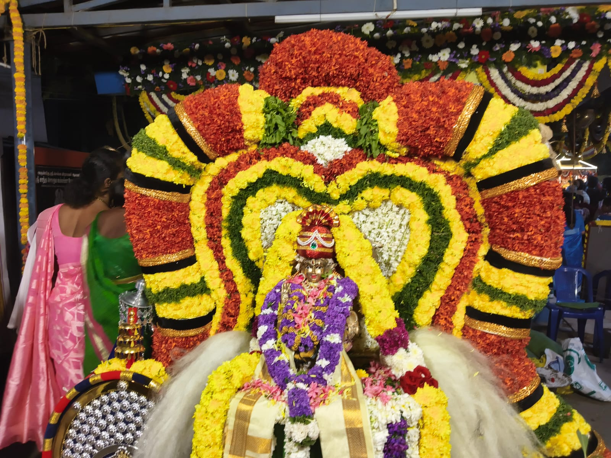

Events & Pooja Celebrations
Join the ABASS community in sacred 18 Padi Pooja, Vilakku Pooja, Sastha Preethi, monthly Annadhaanam, and year-round spiritual festivals.

Spiritual Observances & Schedule
Explore upcoming poojas, recurring monthly Annadhaanam, and year-round spiritual calendar.

80th Annual 18 Padi Pooja & Sastha Preethi
Grand 18 sacred steps floral decoration, lighting of brass deepams, Pushpanjali and honoring of Senior Guruswamys.
- Maha Ganapathi Homam & Navagraha Pooja
- Akhanda Namasankeerthanam & Bhajans
- Continuous Annadhaanam for 2,000+ devotees

Sacred Thiru Vilakku Pooja Mahotsavam
Devout congregational lamp worship with Lalitha Sahasranamam Archana, special flower offerings and kumkum prasad.
- 108 Sacred Brass Lamps lighting
- Suvasini Pooja & Mangala Dravyam
- Sweet Pongal & Fruit Prasadam

Makara Jyothi Darshan & Bhajan Sandhya
Special deeparadhana timed with the sacred Makara Jyothi appearance, accompanied by soulful Ayyappa songs and Harivarasanam.
- Sandal paste (Chandanakkappu) Alankaram
- Live Namasankeerthanam troupe
- Aravana & Appam Prasadam

Monthly Uthram Nakshathram Annadhaanam
Serving 500+ devotees on Lord Sastha's auspicious birth star with traditional nutritious South Indian meals.

Pournami Devotee Annadhaanam & Prasadam
Evening Annadhaanam accompanied by special Sathyanarayana pooja and Lord Sastha stotram chanting.

41-Day Mandala Kalam Daily Annadhaanam
Unbroken 41-day food service for thousands of Ayyappa devotees observing sacred vratham and traveling to Sabarimala.
Karthigai 1 • Mandala Vratham
Sacred Thulasi/Rudraksha Mala Dharanam and commencement of 41-day vratham.
Annual 18 Padi & Vilakku Pooja
Flagship 3-day spiritual festival with 18 steps floral altar and grand Annadhaanam.
Mandalapooja Mahotsavam
Culmination of 41-day Mandala Kalam with Kalasa Abhishekam & Deeparadhana.
Makaravilakku & Jyothi Darshan
Auspicious Makara Sankranthi worship, Chandanakkappu and Sangeetha Bhajans.
Panguni Uthram Festival
Lord Dharma Sastha's Avatar day celebration with Pushpabhishekam.
Chitra Vishu Kani Darshan
Traditional auspicious Vishu Kani darshan and Kai-neettam blessing distribution.

Annual Procession & Guruswamy Sannidhanam Meet
Celebration of the 2024 annual festival featuring sacred Utsavam procession and honoring of senior Guruswamys.

80th Year Diamond Jubilee Seva Planning Conclave
Trustees, Guruswamys and devotee volunteers convened to coordinate welfare initiatives and Annadhaanam drives.

Grand Thirumanjanam & Maha Abhishekam
Holy Dravya Abhishekam performed with milk, honey, tender coconut, sandal paste and sacred vibhuti.
Annual Padi Pooja
The hallmark annual event honouring Lord Ayyappa with 18 divine steps, floral alankaram, deepam lighting and Guruswamy honours.
Thiru Vilakku Pooja
Sacred congregational lamp worship conducted with traditional devotion, Lalitha Sahasranamam chanting and auspicious prayers.
Monthly Annadhaanam
Regular food distribution serving hundreds of devotees and local families as part of our core religious seva mission.